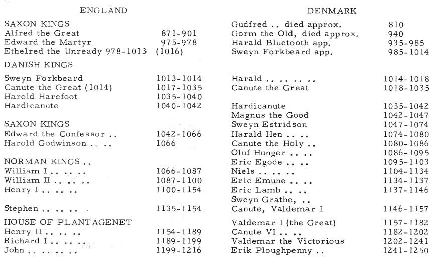
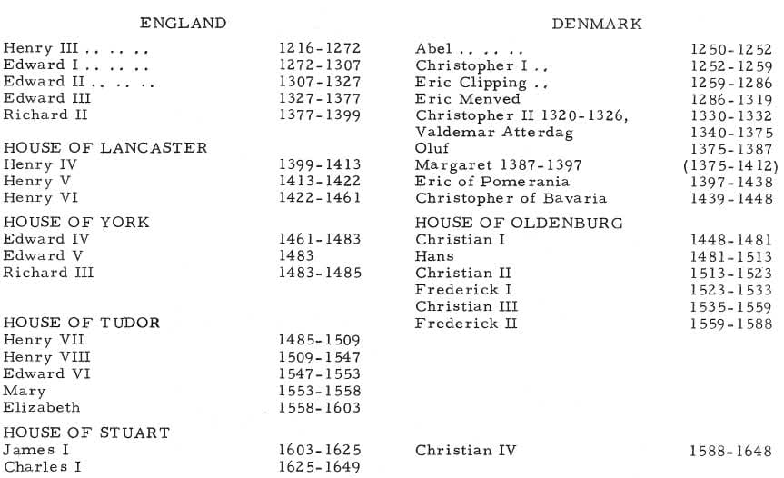
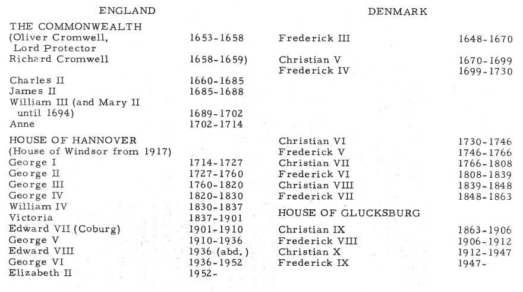

(Special permission to reprint this material in our Christensen book was given in a letter from Ib Permin of ANDR. FRED HØST AND SON of Copenhagen, Denmark, publishers of A History of The Kingdom of Denmark.)
The sovereigns of England can be traced back considerably further than those of Denmark, but then during the early centuries England was divided into several kingdoms of varying sizes. Alfred the Great was the first to stem the Danish onslaught, and after him followed a number of Saxon kings. In 975 came Edward the Martyr (slain by Danish Vikings).
Listed on the following pages, from this Edward onwards, are the kings and queens of England side by side with those of Denmark. This may help English readers to get their bearings in Danish history.
